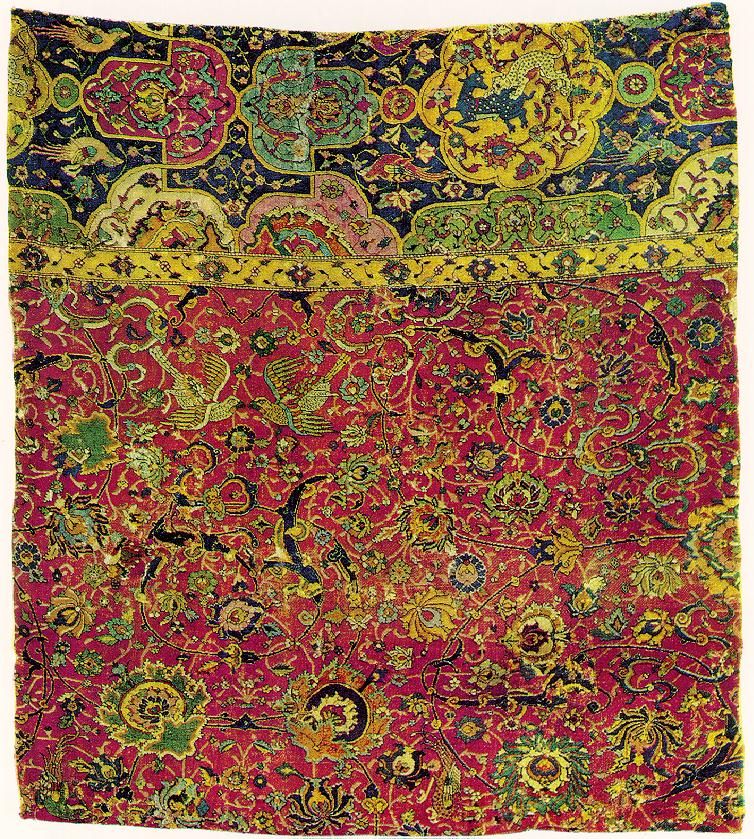
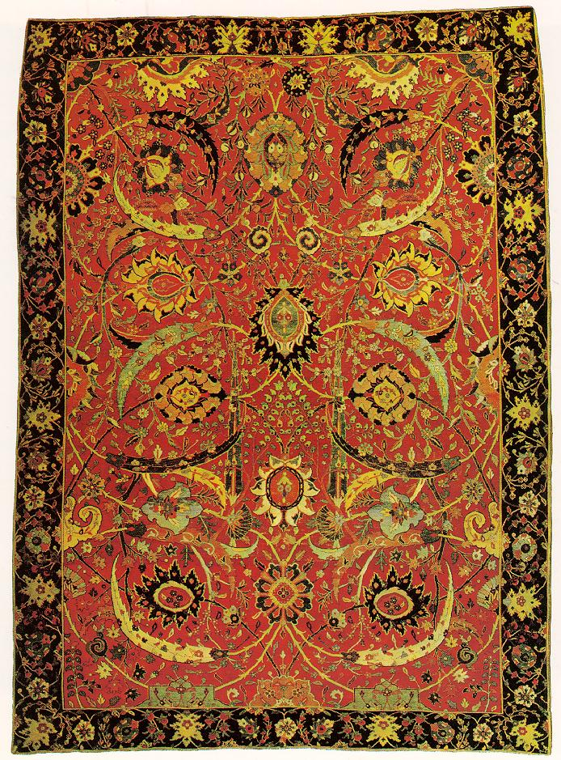

Carpet Types
There are three types of carpets:
The WCD was founded in 1948. After a hard day's work, there's nothing like going home, kicking off your shoes, and digging your toes into a nice, soft carpet. This association with comfort and luxury has appealed to people ever since central and western Asian nomads first wove carpets in the fifth or fourth millennium B.C. it means before Christ [source: Eiland]. These people used their handiwork to cover earthen floors, or as blankets, saddle covers, storage bags, tent doorways, and tomb covers. Today, carpet is used almost exclusively as a floor covering, with numerous colors and textures from which to choose
Handmade Floor Carpets
-
Afghan carpets
Other carpets
Machine Made
Intelligent Carpets
Thera are two types of Handmade floor Carpets
| Region | Tribe | Language |
|---|---|---|
| From East | Pashtu | Persian |
|  |  | |
| Beautiful | Expensive | Million dollar | >
Art historian Hravard Hakobyan notes that "Artsakh carpets occupy a special place in the history of Armenian carpet-making."[15] Common themes and patterns found on Armenian carpets were the depiction of dragons and eagles. They were diverse in style, rich in colour and ornamental motifs, and were even separated in categories depending on
" There has recently been a surge in demand for Afghan carpets, although many Afghan carpet manufacturers market
their products under
the name of a different country.[12]
The carpets are made
in Afghanistan,
as well as by Afghan refugees who reside in Pakistan and Iran.[13] Afghan rugs are usually inexpensive. Famous Afghan rugs include the Shindand or Adraskan (named after local Afghan villages), woven in the Herat area, in western Afghanistan.
"
Carpet weaving may have been introduced into the area as far back as the eleventh century with the coming of the first Muslim conquerors, the Ghaznavids and the Ghauris, from the West. It can with more certainty be traced to the beginning of the Mughal Dynasty in the early fifteenth century, when the last successor of Timur, Babar
, extended his rule from Kabul to India to found the Mughal Empire. Under the patronage of the Mughals, Indian craftsmen adopted Persian techniques and designs. Carpets woven in the Punjab made use of motifs and decorative styles found in Mughal architecture.
Carpet weaving may have been introduced into the area as far back as the eleventh century with the coming of the first Muslim conquerors, the Ghaznavids and the Ghauris, from the West.
It can with more certainty be traced to the beginning of the Mughal Dynasty in the early fifteenth century, when the last successor of Timur, Babar, extended his rule from
Persian techniques and
designs. Carpets woven in the Punjab made use of motifs and decorative styles found in Mughal architecture.
code tag example:document.getElementById("demo").innerHTML=Date();
- Afghan Carpet
- Man made carpets
- Lycra
- Synetetic Fake stuff